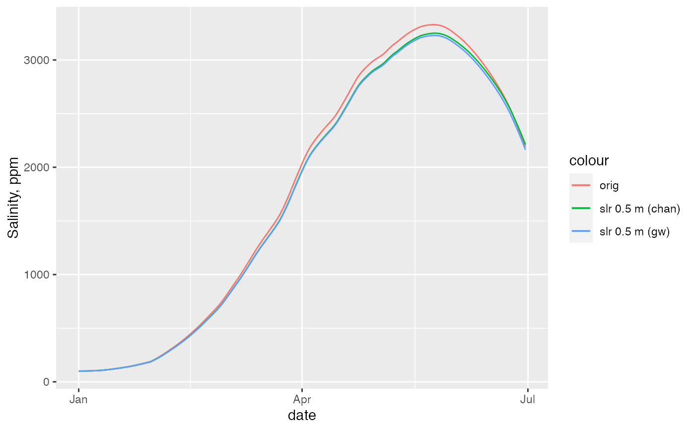

update_ab_SLR.RdUpdate a and b parameters for sea level rise
update_ab_SLR(v, SLR_m, control_volume)
| v | Vector of length 4 containing log parameter values: |
|---|---|
| SLR_m | vector of sea level rise in meters |
| control_volume | set to "channel" or "gw" |
Returns the parameter vector v with updated a and b for a given sea level rise and d set to NA.
For a given sea level rise and initial v1 (parameters), this function
updates a and b as a2 = a1 / R_V and b_2 = b_1 R_E / R_V, where R_E
and R_V are determined from get_ganges_SLR_ratios. Because
v contains logged values, this is calculated as:
log(a2) = log(a1) - log(R_V)
log(b2) = log(b1) + log(R_E) - log(R_V)
library(ggplot2) # get updated v with sea level rise of 0.5 m v_orig <- ganges_params$param v_slr_chan <- update_ab_SLR(v_orig, SLR_m = 0.5, "channel") v_slr_gw <- update_ab_SLR(v_orig, SLR_m = 0.5, "gw") # replace original value of d to create a dummy simulation v_slr_chan[3] <- v_orig[3] v_slr_gw[3] <- v_orig[3] # simulate salinity under original and new parameters Q_df <- ganges_streamflow[ganges_streamflow$group == "Treaty avg",] Q_df$S_ppm_orig <- sim_salin_annual(Q_df, v_orig) Q_df$S_ppm_slr_chan <- sim_salin_annual(Q_df, v_slr_chan) Q_df$S_ppm_slr_gw <- sim_salin_annual(Q_df, v_slr_gw) # plot the results ggplot(Q_df) + geom_line(aes(date, S_ppm_orig, color = "orig")) + geom_line(aes(date, S_ppm_slr_chan, color = "slr 0.5 m (chan)")) + geom_line(aes(date, S_ppm_slr_gw, color = "slr 0.5 m (gw)")) + ylab("Salinity, ppm")